This article walks through a scroll app built from the public 10x
Genomics dataset of CD8+ T cells from four donors (gene expression, TCR
and antigen binding; 237,883 cells). Everything shown comes from one
call to scroll_build(); the repertoire panels appear
because the build was given a vdj_spec().
The page
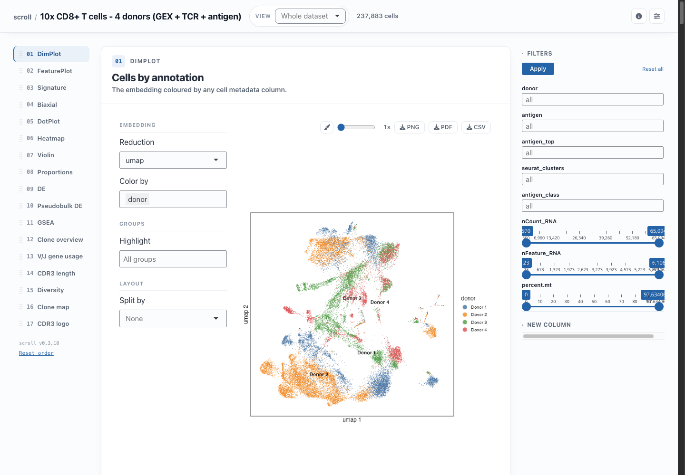
- App bar (top): the dataset title, the View selector, the number of cells currently shown, dataset details, a two-panels-per-row toggle and the control-rail toggle.
- Panel rail (left): one entry per panel. Click to jump; drag to reorder.
- Panels (centre): each card has what to plot on the left and the plot on the right, with a toolbar for the Style sheet, export size, and PNG / PDF / CSV downloads.
- Control rail (right): filters that narrow every panel at once, and the New column tool.
Panels only draw while they are on screen, and only show up when the
data supports them (DE needs a grouping column, the repertoire panels
need TCR data). The panels: and
exclude_panels: keys in config.yaml override
this.
Looking at cells
DimPlot colours any embedding by a metadata column, with optional highlighting of chosen groups and a split into facets.
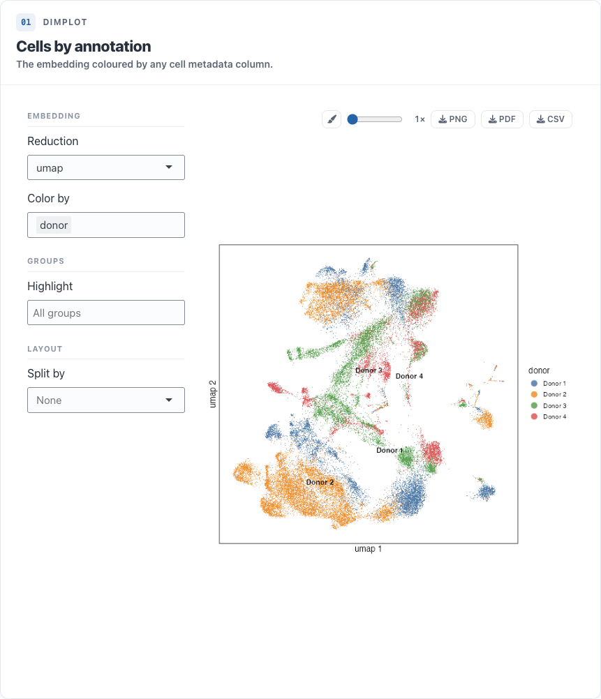
FeaturePlot takes several genes (or numeric columns) at once and draws a grid, each with its own colour scale. With two genes, Blend shows co-expression.
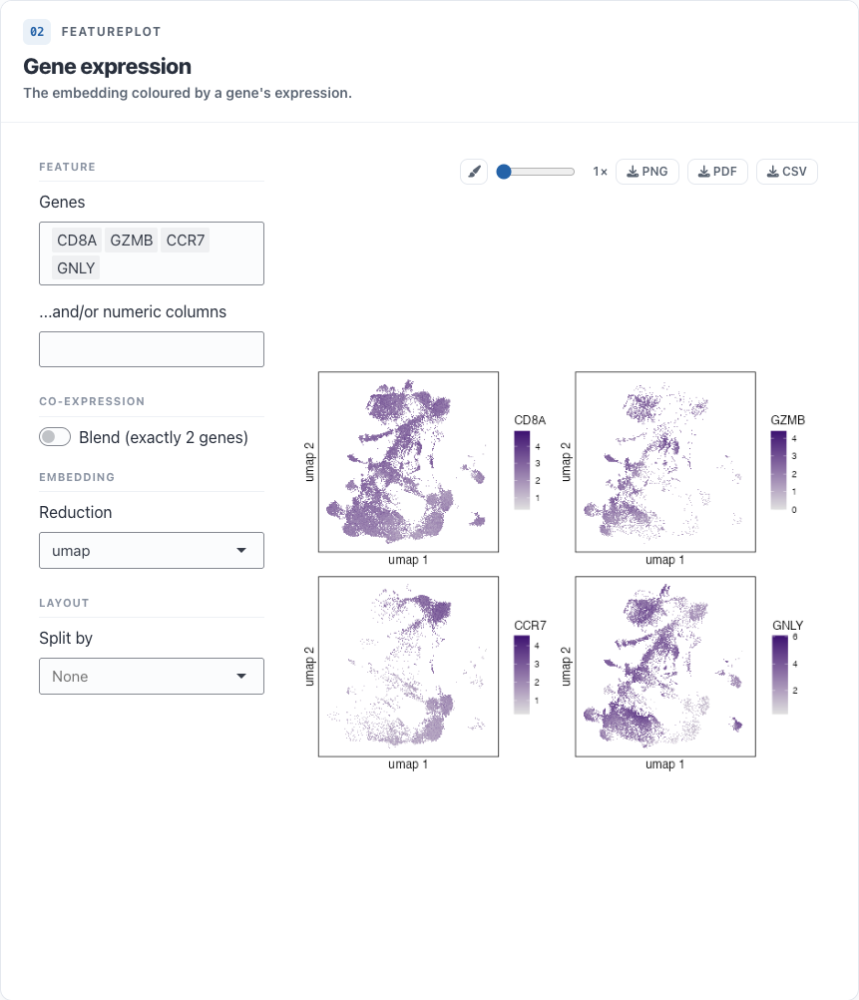
Signature scores a gene list per cell: a plain mean,
a z-score, Seurat’s AddModuleScore (matched exactly), UCell
or an AUCell-style score. The score can be shown on the embedding or as
a violin, and Add as column makes it (and optional high / low
groups) a column in every other panel.
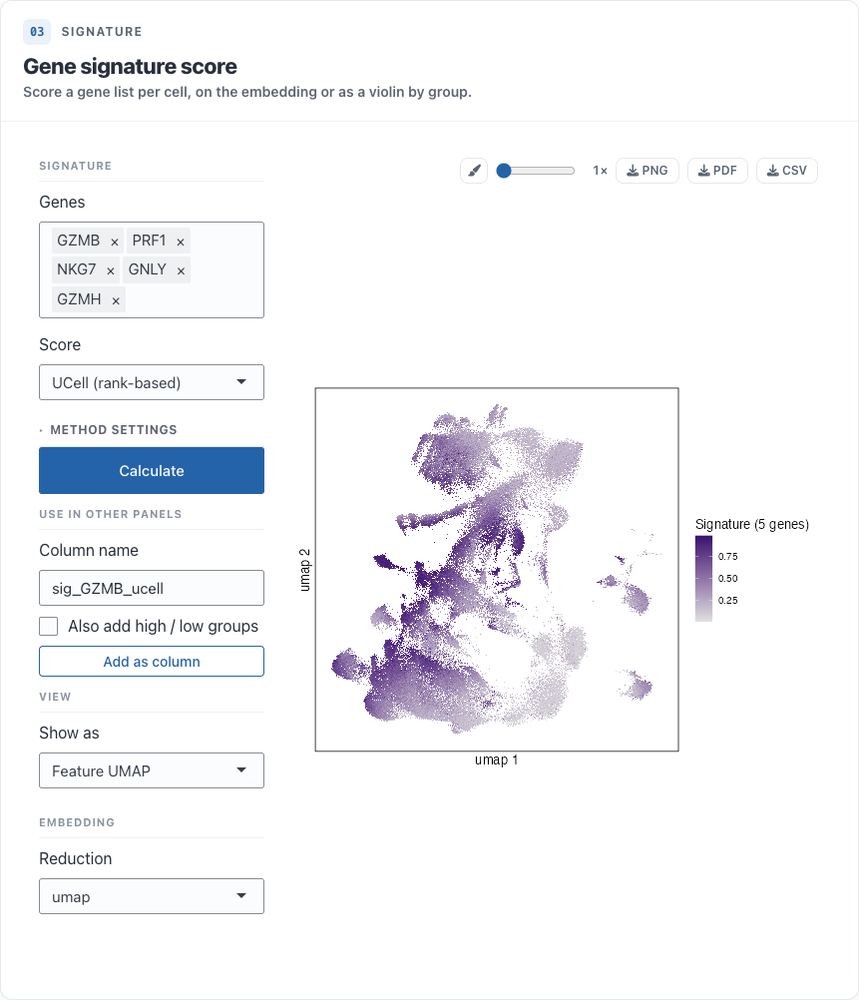
Biaxial plots pairs of numeric columns against each other, e.g. QC metrics or antibody-derived tags.
Comparing groups
DotPlot shows the fraction of cells expressing each gene and the mean expression per group, with optional clustering and dendrograms. Heatmap, Violin and Ridge show the same genes as a heatmap, as violins or as one density ridge per group. The DotPlot and Violin gene boxes accept a pasted list.
These panels can group by several columns at once (e.g. cluster and donor), and list groups in natural order, so cluster 2 comes before cluster 10. To set your own order, drag the group labels in the plot’s Style sheet.
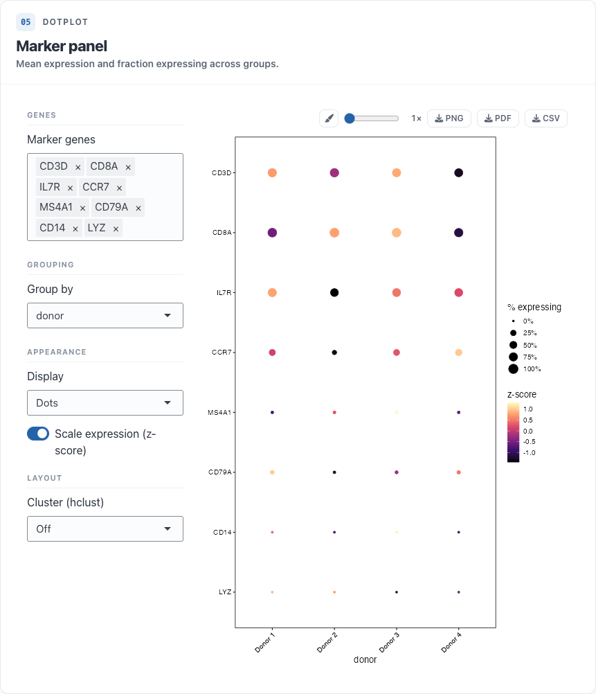
Proportions shows how one grouping is made up of another, e.g. each cluster’s donor composition.
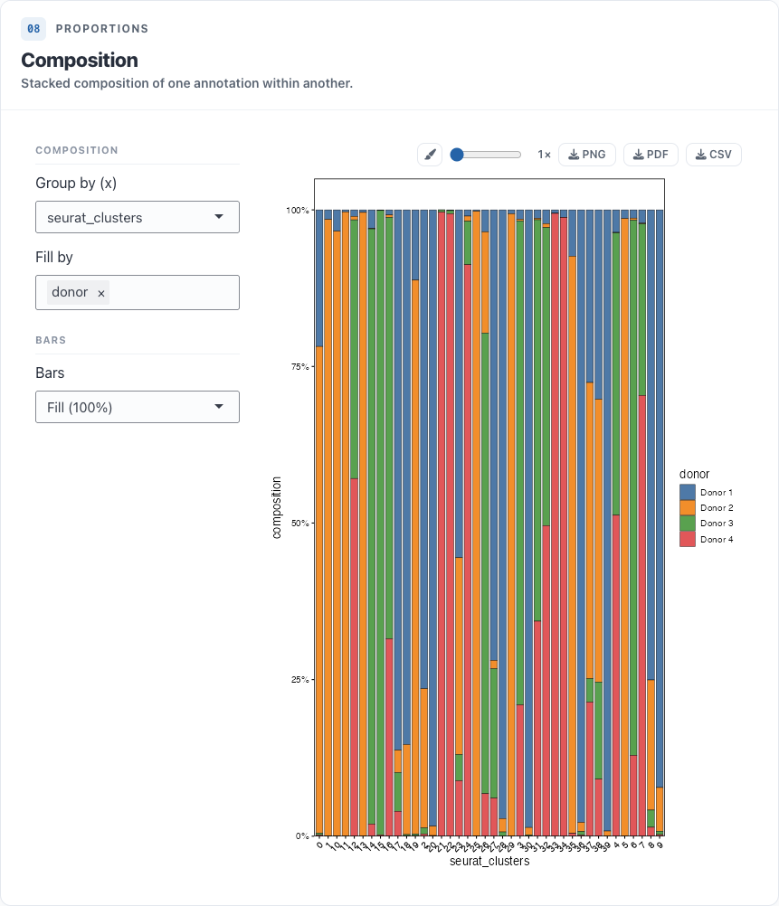
Differential expression
DE runs a Wilcoxon test (presto) for any contrast: one or more groups against another set or against the rest. The result appears as a table and a volcano plot. The CSV can hold the rows on screen, only the genes passing the cutoffs, or every gene.
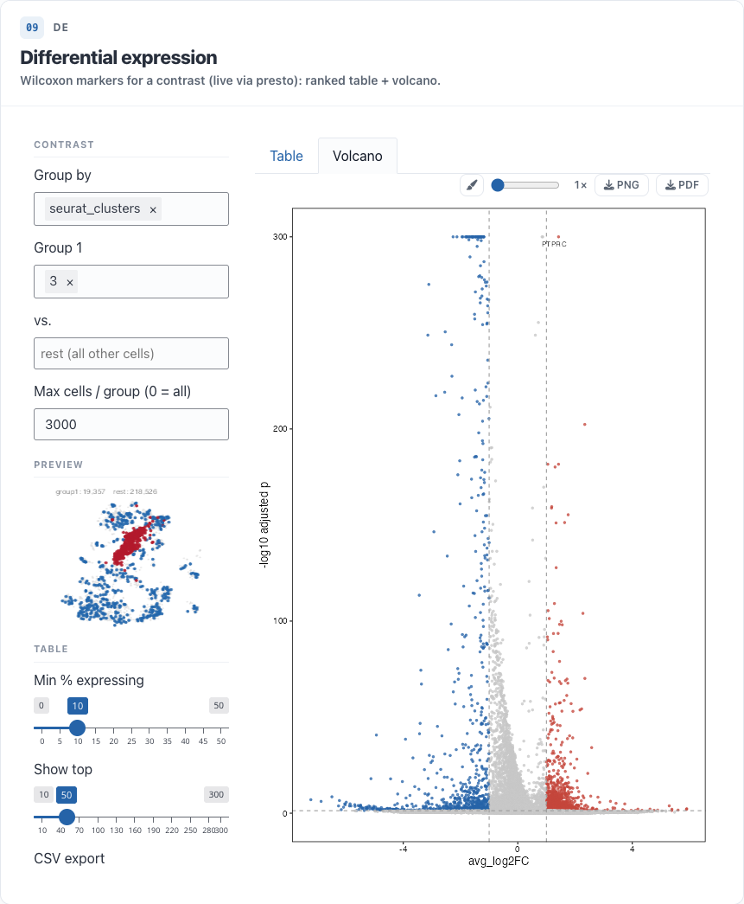
Pseudobulk DE sums counts per sample and tests with
edgeR / limma-voom, using replicates (e.g. donors) when you name them
and pseudo-replicates when you don’t. It needs a project built with
counts = TRUE.
GSEA takes the latest DE or Pseudobulk result and
runs preranked GSEA (fgsea) against gene sets saved in the project
(scroll_add_genesets()) or fetched from MSigDB. It shows a
table, the top pathways, and the running enrichment score for any
pathway.
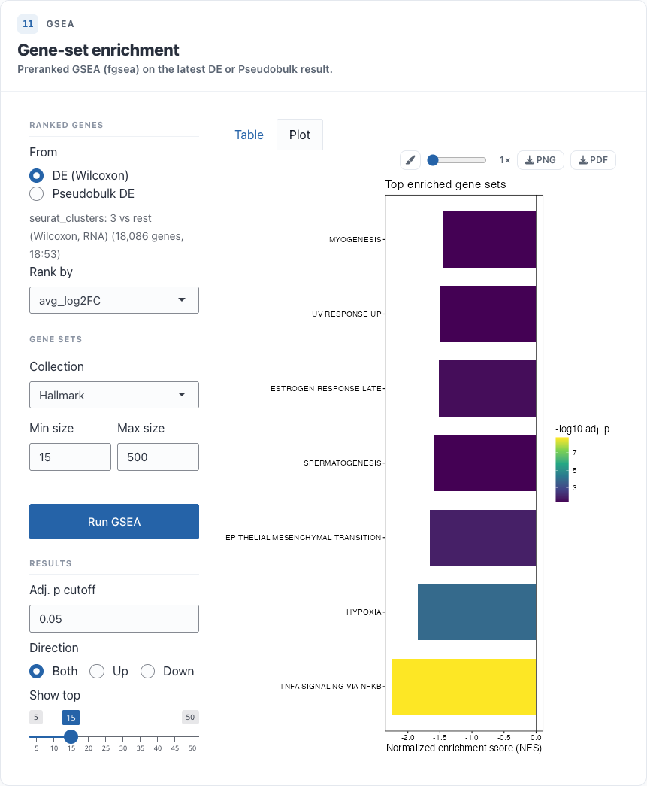
Immune repertoire, spatial and ATAC
Projects built with vdj_spec() get six repertoire
panels: clone overview (rank-abundance and expansion), V/J gene usage,
CDR3 length, diversity, a clone map on the embedding and a CDR3 sequence
logo. spatial_spec() adds a tissue-image panel and
atac_spec() a peak panel.
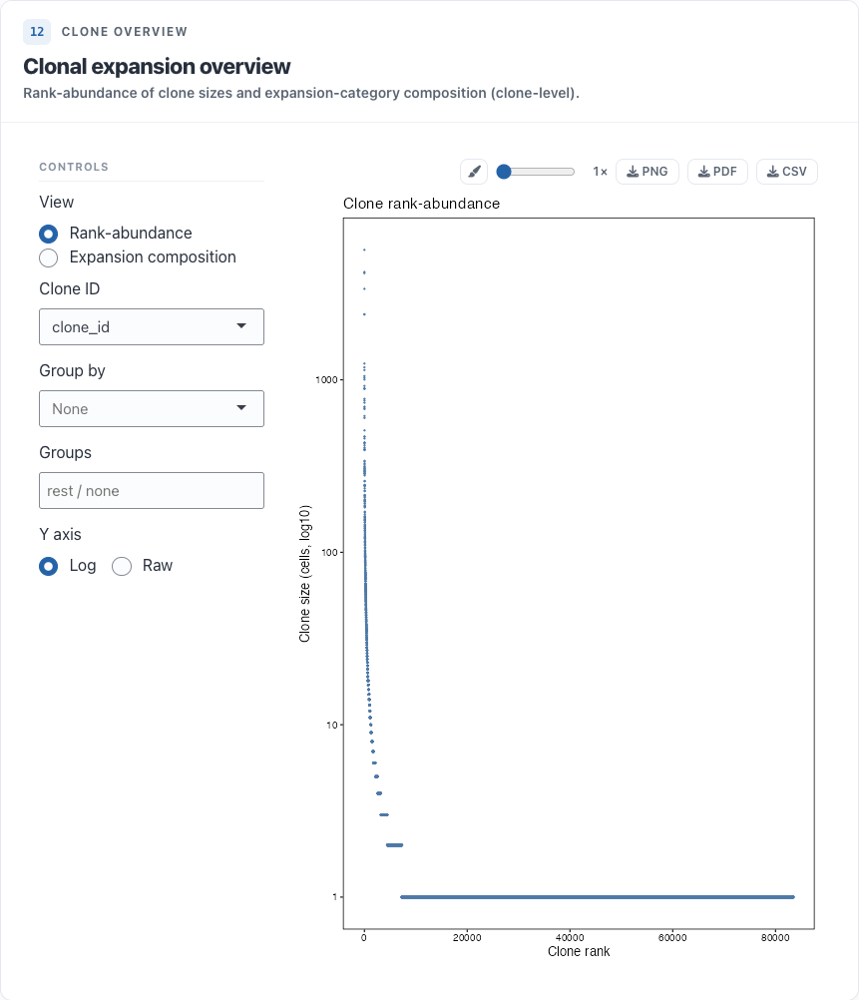
Styling a plot
The paintbrush in a plot’s toolbar opens its Style
sheet. Changes apply live: palettes and point sizes, titles and
axis labels, the theme (fonts, legend, gridlines), axis ranges and
scales, and the fixed settings of every layer the plot draws. Apply
theme to all plots copies one plot’s theme to the rest, and
Save writes every plot’s style to
style.yaml in the project so the next session starts from
it.
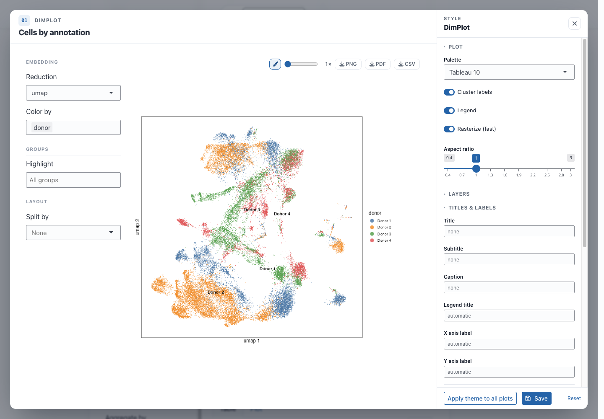
Views, filters and new columns
A project built with subset views (scroll_add_subset())
gets a View selector in the app bar. Choosing a view
restricts every panel to that subset and switches the scatter plots to
its own embedding; here, one donor re-embedded on its own.
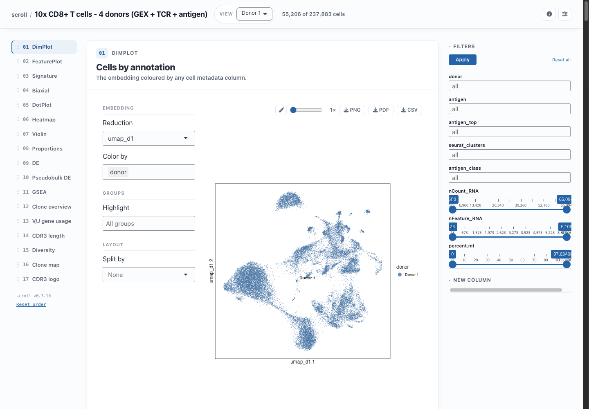
The control rail on the right holds Filters, which
narrow every panel to the chosen levels or ranges when you click
Apply, and New column, which maps the levels
of a column to new labels for the session. For example,
[Donor 1, Donor 2]: A, [Donor 3, Donor 4]: B adds a
batch column that every panel can colour, group or split
by.
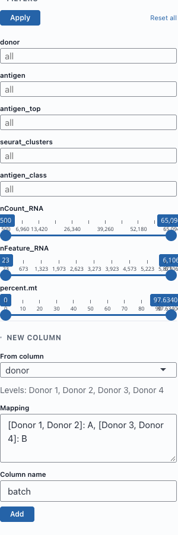
Next steps
- Getting started: build and configure a project.
- Custom panel: add a panel of your own.